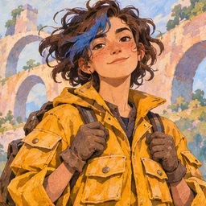
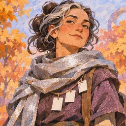
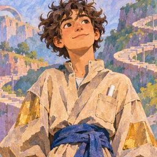

Тома Ритм
воин 3 · ОЗ 31 · КД 11 · Скорость 30 фтСценический такелажник; канонический воин третьего уровня в музыкальной оболочке
Жёлтая куртка с широкими карманами, мягкие рабочие перчатки, синяя прядь над бровью.
Ты пришла сделать движение, которому зритель поверит всем телом. Пока у тебя есть только рисунок кольца, проходящего сквозь себя.
Открыть фигурку для поля
Оружие и заклинания
Оружие · Длинный меч, Ручной топор

Ниль Петля
плут 3 · ОЗ 24 · КД 13 · Скорость 30 фтЛовец материального эха; канонический плут третьего уровня в музыкальной оболочке
Короткий плащ из сетчатой ткани, цветные зажимы на поясе, записная книжка с круглыми полями.
Ты умеешь замечать красивое в повторе, но хочешь придумать новый жест, который не нуждается в бесконечном продолжении.
Открыть фигурку для поля
Оружие и заклинания
Оружие · Рапира, Короткий лук

Весна Пауза
жрец 3 · ОЗ 24 · КД 11 · Скорость 30 фтХранительница сценической паузы; канонический жрец третьего уровня в музыкальной оболочке
Серебристый шарф, тяжёлые удобные ботинки, маленькие белые карточки вместо украшений.
Ты любишь ясные окончания и пришла узнать, можно ли поставить сильный спектакль с нарочно открытым швом.
Открыть фигурку для поля
Оружие и заклинания
Оружие · Боевой посох
Заклинания · Лечащее слово, Обнаружение магии

Кира Линии
волшебник 3 · ОЗ 20 · КД 12 · Скорость 30 фтРисовальщица звучащих поверхностей; канонический волшебник третьего уровня
Пятнистый комбинезон и карандаш за каждым ухом; манжеты исписаны простыми геометрическими знаками.
Ты лучше думаешь рисунком, чем длинной речью, и хочешь увидеть свою линию выше человеческого роста.
Открыть фигурку для поля
Оружие и заклинания
Оружие · Боевой посох
Заклинания · Обнаружение магии, Туманный шаг

Рак Узел
воин 3 · ОЗ 31 · КД 11 · Скорость 30 фтМастер переносных рам; канонический воин третьего уровня
Зелёный жилет, седая коса и складная линейка, которой он чаще рисует, чем измеряет.
Ты долго строил аккуратные вещи и теперь хочешь позволить одной из них выглядеть странной.
Открыть фигурку для поля
Оружие и заклинания
Оружие · Длинный меч, Ручной топор

Сона Стекло
волшебник 3 · ОЗ 20 · КД 12 · Скорость 30 фтСоздательница световых граней; канонический волшебник третьего уровня
Тёмная накидка с янтарной подкладкой, прозрачные браслеты и очень серьёзные разноцветные носки.
Ты мечтаешь о большом красивом появлении и подозреваешь, что маленькое движение иногда говорит больше.
Открыть фигурку для поля
Оружие и заклинания
Оружие · Боевой посох
Заклинания · Обнаружение магии, Туманный шаг

Эли Шаг
плут 3 · ОЗ 24 · КД 13 · Скорость 30 фтИсполнительница движущихся рисунков; канонический плут третьего уровня
Длинный синий пояс, широкие рукава с золотыми заплатами, мел в нагрудном кармане.
Ты хочешь придумать движение, которое можно понять без объясняющей речи и исполнить разными телами.
Открыть фигурку для поля
Оружие и заклинания
Оружие · Рапира, Короткий лук